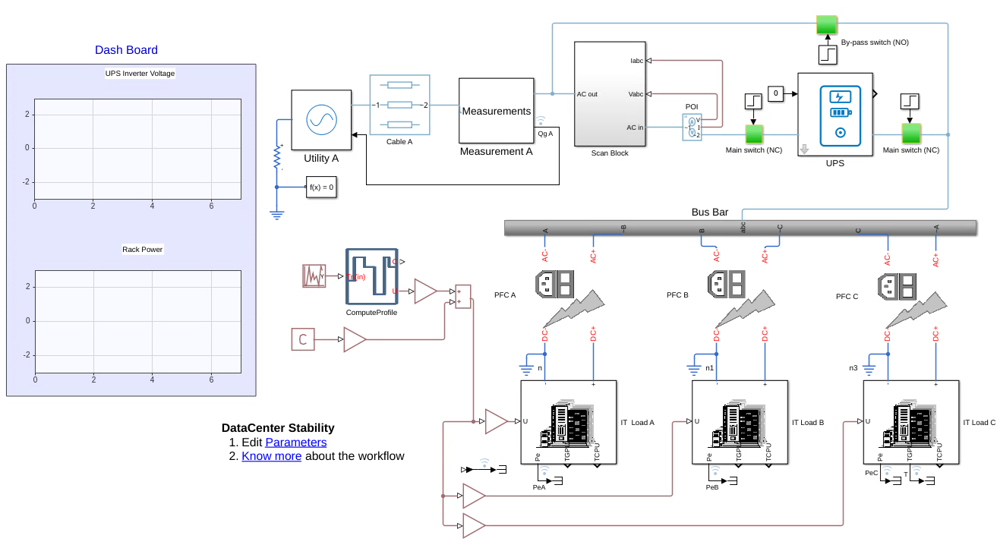
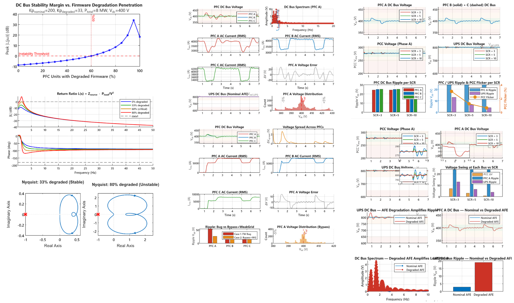

This example shows how to assess stability of a MW data center power delivery network under firmware faults, weak grid conditions, and UPS controller degradation. The model represents 400 PFC units fed by a double-conversion UPS from the utility grid, supplying thousands of GPUs. You can run four cases in parallel using parsim: degraded PFC gains, UPS bypass with a weak grid, a short-circuit ratio sweep, and a weakened UPS rectifier. Analytical predictions, time-domain comparisons, a stability map, and a Nyquist-based firmware penetration limit frame the results. Use Simscape to simulate each case, log signals, and compare designs.
Model

Results

Copyright 2025 - 2026 The MathWorks, Inc.